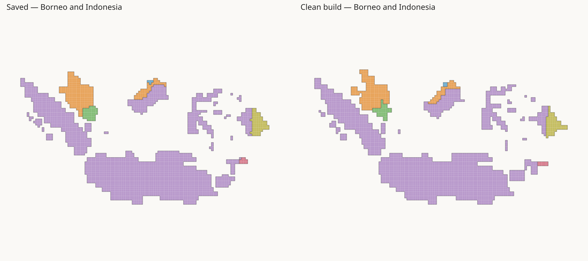
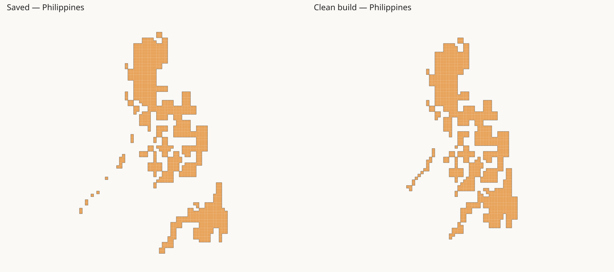
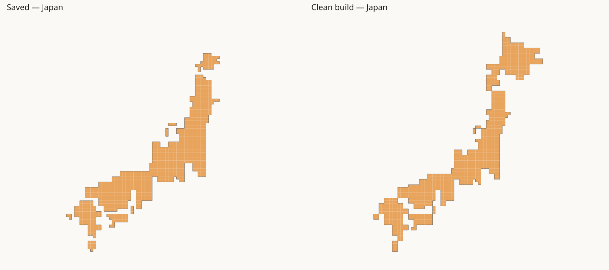
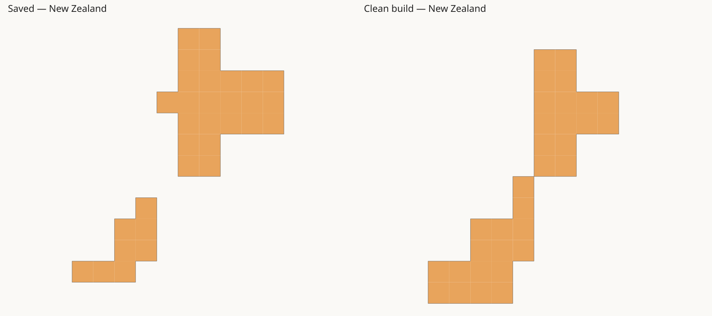
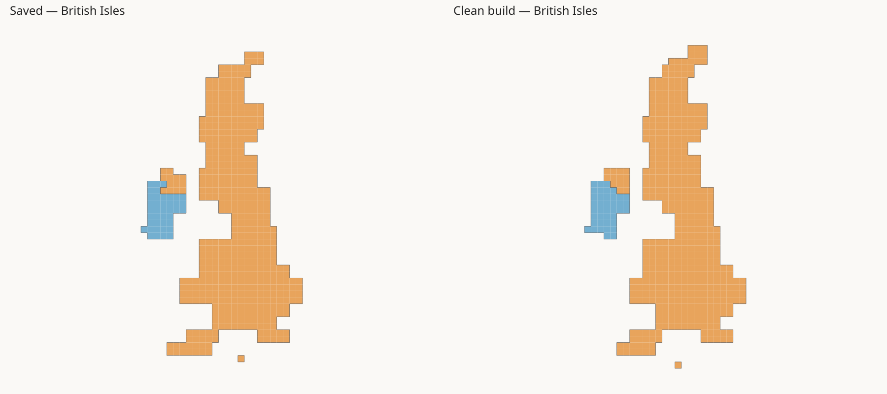
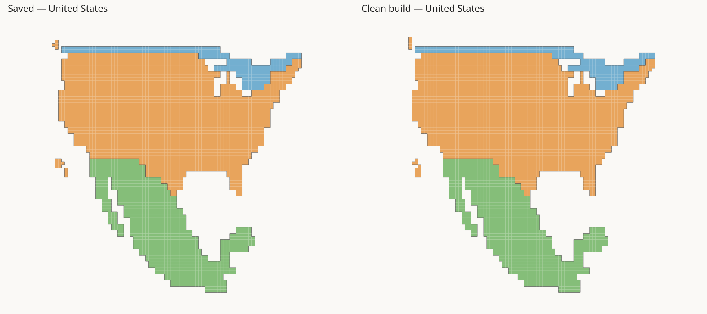

Left: saved corner-group trial. Right: new build from raw inputs. Each pair uses the same scale. Colours identify country scopes, not islands. The saved layout is a comparison input only.





